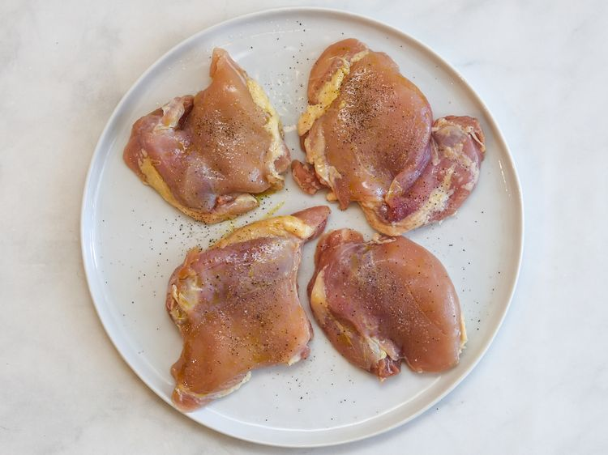
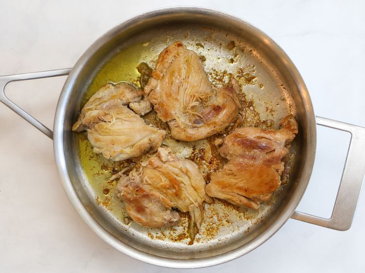
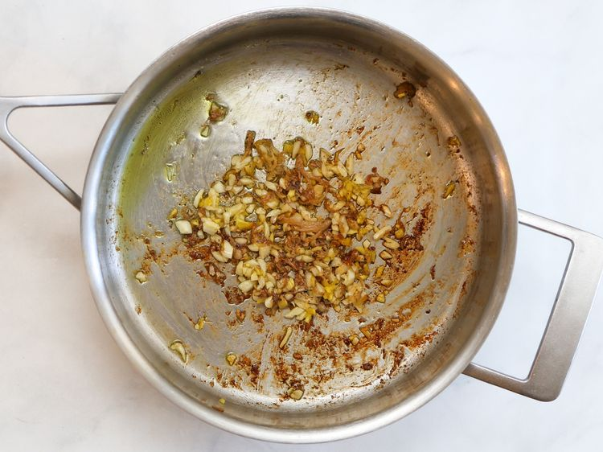
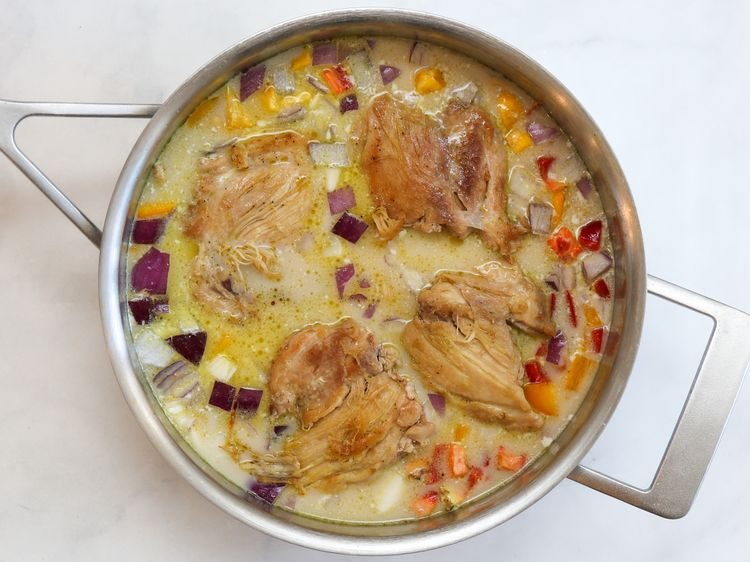
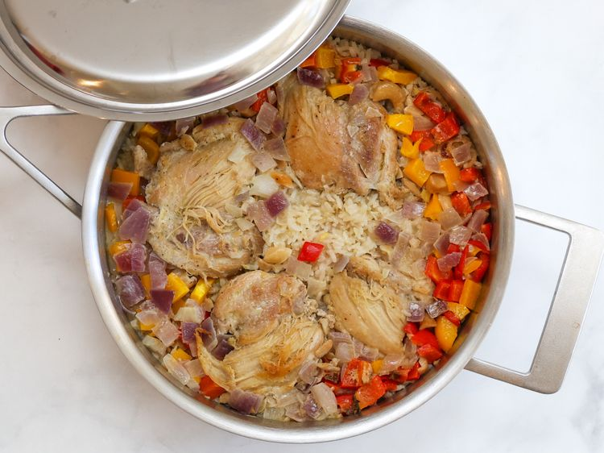
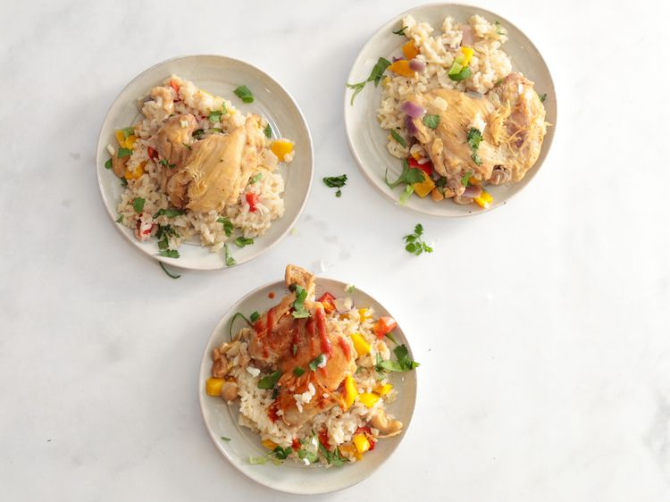

Preheat the oven to 375 degrees F (190 degrees C). Rub chicken pieces with 1 tablespoon oil, season with 1 tablespoon salt, and white pepper.
Heat 2 tablespoons oil in a Dutch oven over medium heat. Brown chicken in 2 batches, turning halfway, about 5 minutes per batch. Transfer to a plate and keep warm.
Add remaining 1 tablespoon oil, gigner, and garlic to the empty pot, and stir until fragrant, about 30 seconds
Add rice and stir until evenly coated in oil. Add broth, cocnut milk, yellow bell pepper, red bell pepper, red onion, cashews and remaining salt. Stir to lift up any browned bits on the bottom of the pot. Arrange chicken on top, add any accumulated juices from the plate, and bring to a boil over high heat.
Bake, covered, in the preheated oven until liquid is absorbed, rice is tender, and chicken is no longer pink at the center, about 25 minutes. An instant read thermometer inserted into the center of chicken should read 165 degrees F (74 degrees C).
Scatter green onions and cilantro over chicken and rice, then divide among bowls. Serve with hot sauce.
